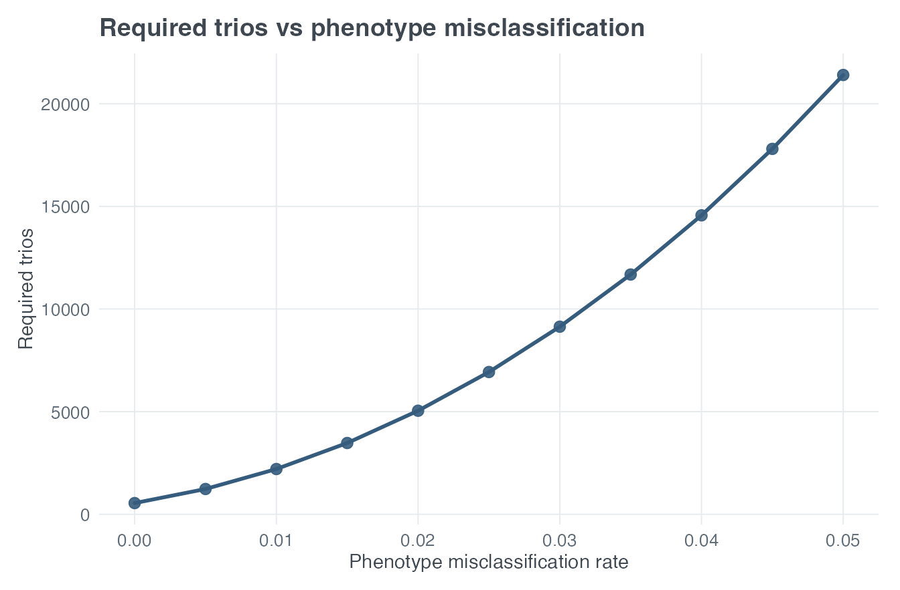
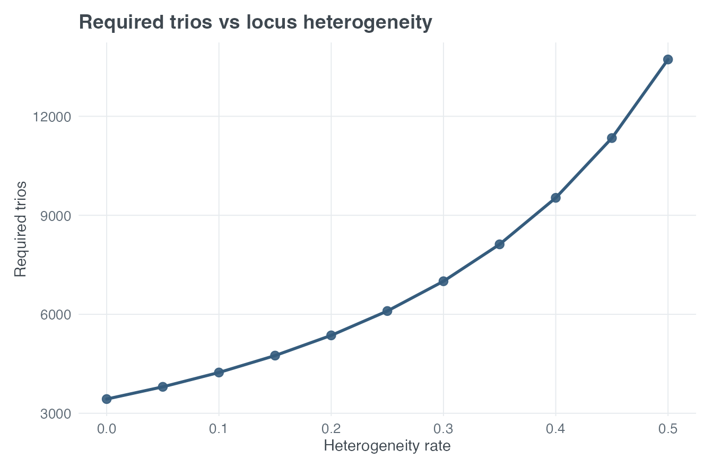

vignettes/paweh-03-tdt-study-design.Rmd
paweh-03-tdt-study-design.RmdThe transmission disequilibrium test (TDT) compares an allele transmitted to an affected child with the alternative parental allele that was not transmitted. This within-family comparison can avoid confounding from population stratification that affects unrelated case-control comparisons.
Let ET and ENT denote expected transmitted
and non-transmitted counts. The one-degree-of-freedom TDT non-centrality
parameter is based on their contrast,
In this vignette, N and every reported MSSN are numbers
of affected-child trios, not numbers of individual people.
The canonical model-based interfaces answer inverse design questions under a common genetic model.
basic_tdt_power <- tdt_power(
N = 600, input_mode = "model_based",
pd = 0.30, prev = 0.05, R1 = 1.5, R2 = 2.25,
alpha = 0.05, delta_prime = 1,
misclass_rate = 0.01, heter_rate = 0.10,
verbose = FALSE
)
basic_tdt_mssn <- tdt_mssn(
target_power = 0.80, input_mode = "model_based",
pd = 0.30, prev = 0.05, R1 = 1.5, R2 = 2.25,
alpha = 0.05, delta_prime = 1,
misclass_rate = 0.01, heter_rate = 0.10,
verbose = FALSE
)
data.frame(
scenario = c("No error", "Phenotype misclassification", "Locus heterogeneity"),
power_at_600_trios = unlist(basic_tdt_power$power),
required_trios = unlist(basic_tdt_mssn$N),
row.names = NULL
)
#> scenario power_at_600_trios required_trios
#> 1 No error 0.9967475 214.9086
#> 2 Phenotype misclassification 0.9750532 306.3362
#> 3 Locus heterogeneity 0.9878723 265.3192The canonical backend reports separate modifier scenarios. It does not claim that the misclassification and heterogeneity components are a combined-error analysis.
Model-based input uses pd, prev,
R1, R2, and delta_prime. The
lower-level probability and count functions make the connection to
ET and ENT visible without requiring a long
derivation.
gT <- tdt_expected_transmission_probability(
pd = 0.30, prev = 0.05, R1 = 1.5, R2 = 2.25,
delta_prime = 1, verbose = FALSE
)
gNT <- tdt_expected_nontransmission_probability(
pd = 0.30, prev = 0.05, R1 = 1.5, R2 = 2.25,
delta_prime = 1, verbose = FALSE
)
expected_counts <- tdt_expected_transmission_counts(
N_star = 500,
pd = 0.30, prev = 0.05, R1 = 1.5, R2 = 2.25,
delta_prime = 1, pi = 1, verbose = FALSE
)
data.frame(
quantity = c("Transmission probability", "Non-transmission probability", "ET", "ENT"),
value = c(gT$gT_star, gNT$gNT_star, expected_counts$ET_star, expected_counts$ENT_star)
)
#> quantity value
#> 1 Transmission probability 0.2465217
#> 2 Non-transmission probability 0.2100000
#> 3 ET 246.5217391
#> 4 ENT 210.0000000If a pilot study or external calculation already supplies expected counts, they can be used directly:
count_power <- tdt_power_from_expected_counts(
ET = expected_counts$ET_star,
ENT = expected_counts$ENT_star,
alpha = 0.05
)
#>
#> --- Transmission Disequilibrium Test (TDT) ---
#> Equation: 1.25 | Input: Expected Transmissions and Non-Transmissions
#> -----------------------------------------------------------
#> Expected Transmissions (ET): 246.5217
#> Expected Non-Transmissions (ENT): 210.0000
#> Non-Centrality Parameter (lambda): 2.9217
#> Power at alpha = 0.05: 0.4012
#> -----------------------------------------------------------
canonical_model_free <- tdt_power(
N = 500, input_mode = "model_free",
ET = expected_counts$ET_star,
ENT = expected_counts$ENT_star,
misclass_rate = 0, heter_rate = 0,
verbose = FALSE
)
c(lower_level_power = count_power$power,
canonical_power = canonical_model_free$power$no_error)
#> canonical_power
#> 0.4011623For model-free MSSN, n_trios records the trio count
represented by the supplied ET and ENT.
Applying heterogeneity additionally requires pd; applying
phenotype misclassification requires pd and
prev. Model-free inputs therefore relocate assumptions
rather than eliminate them.
The public effect argument can select
"none", "phenotype_misclassification",
"locus_heterogeneity", or
"genotype_misclassification". The last option implements
the Chapter 5 model-based TDT genotype-error model through the scalar
argument genotype_misclassification_rate.
For adjacent-genotype error rate (e), with (0 e ), the transition matrix from true to observed genotype is
Thus a true genotype 0 can be observed as 0 or 1, a true genotype 1 can be observed as 0, 1, or 2, and a true genotype 2 can be observed as 1 or 2. Direct errors between genotypes 0 and 2 are not allowed.
The calculation begins with the true Mendelian trio distribution, applies the transition model to the observed trio genotypes, and removes observed Mendelian-inconsistent states. It renormalizes the retained consistent states, calculates their expected transmitted and non-transmitted counts, and uses the resulting TDT non-centrality parameter for prospective power or MSSN.
genotype_error_power <- tdt_power(
N = 600, input_mode = "model_based",
pd = 0.30, prev = 0.05, R1 = 1.5, R2 = 2.25,
alpha = 0.05, delta_prime = 1,
effect = "genotype_misclassification",
genotype_misclassification_rate = 0.01,
verbose = FALSE
)
genotype_error_mssn <- tdt_mssn(
target_power = 0.80, input_mode = "model_based",
pd = 0.30, prev = 0.05, R1 = 1.5, R2 = 2.25,
alpha = 0.05, delta_prime = 1,
effect = "genotype_misclassification",
genotype_misclassification_rate = 0.01,
verbose = FALSE
)
genotype_error_mssn_values <- c(
genotype_error_mssn$N$no_error,
genotype_error_mssn$N$genotype_misclassification
)
data.frame(
scenario = c("No genotype error", "1% adjacent-genotype error"),
power_at_600 = c(
genotype_error_power$power$no_error,
genotype_error_power$power$genotype_misclassification
),
fractional_mssn = genotype_error_mssn_values,
recruitment_trios = ceiling(genotype_error_mssn_values)
)
#> scenario power_at_600 fractional_mssn recruitment_trios
#> 1 No genotype error 0.9967475 214.9086 215
#> 2 1% adjacent-genotype error 0.9916522 248.4951 249In this example, genotype error reduces power at 600 trios and
increases the recruitment target for 80% power. This branch is available
only with input_mode = "model_based" and uses one scalar
adjacent-genotype error rate; it does not accept a custom transition
matrix. It cannot be combined with phenotype misclassification or locus
heterogeneity. It is neither TDTae nor the sequencing/NGS genotype-error
implementation.
Buyske et al. examined phenotype misclassification in affected-child
trios. The validated multiplicative example uses target power 0.80,
alpha = 1e-5, pd = 0.50, prevalence 0.01,
R2 = 2.5, R1 = sqrt(2.5), maximum positive LD,
and phenotype misclassification rate 0.05.
buyske <- tdt_mssn(
target_power = 0.80, alpha = 1e-5,
pd = 0.50, prev = 0.01,
R1 = sqrt(2.5), R2 = 2.5,
delta_prime = 1,
misclass_rate = 0.05, heter_rate = 0,
verbose = FALSE
)
buyske_ratio <- buyske$N$misclassification / buyske$N$no_error
data.frame(
quantity = c("No-error MSSN", "Misclassification MSSN", "Final sample-size ratio"),
published = c("approximately 546", "approximately 21,400", "approximately 39-fold"),
paweh = c(buyske$N$no_error, buyske$N$misclassification, buyske_ratio)
)
#> quantity published paweh
#> 1 No-error MSSN approximately 546 545.55101
#> 2 Misclassification MSSN approximately 21,400 21400.40957
#> 3 Final sample-size ratio approximately 39-fold 39.22715This is an excellent Published-example reproduction:
approximately 546 versus 21,401 affected-child trios, a 39.23-fold final
sample-size ratio. A 39.23-fold ratio is a 3,822.7% increase, not a
39.23% increase. The percent_increase component stores this
conventional percentage as 100 * ((new / baseline) - 1);
the validated final-to-baseline ratio remains 39.23-fold.
plot_tdt_mssn(
x_var = "misclass_rate",
x_values = seq(0, 0.05, by = 0.005),
scenario = "misclassification",
input_mode = "model_based",
target_power = 0.80, alpha = 1e-5,
pd = 0.50, prev = 0.01,
R1 = sqrt(2.5), R2 = 2.5,
delta_prime = 1, heter_rate = 0,
title = "Required trios vs phenotype misclassification"
)
Required affected-child trios as phenotype misclassification increases under the Buyske model.
The steep curve identifies a fragile design region. It does not represent a confidence interval or a probability distribution over the error rate.
The optional interactive surface can evaluate the same Buyske parameters over a modest prevalence-by-error grid. The example is left unevaluated in the installed vignette to avoid embedding a multi-megabyte Plotly widget; run the copyable code in an interactive R session to explore the surface.
plot_tdt_surface3d(
metric = "mssn", scenario = "misclassification",
x = "prev", y = "misclass_rate",
x_values = c(0.005, 0.01, 0.02, 0.04),
y_values = seq(0, 0.05, length.out = 5),
target_power = 0.80, alpha = 1e-5,
pd = 0.50, R1 = sqrt(2.5), R2 = 2.5,
delta_prime = 1, heter_rate = 0
)When run interactively, this surface extends discrete calculations into a sensitivity analysis; it is not an uncertainty distribution.
Chen et al. studied TDT design under locus heterogeneity. Here
heter_rate is the heterogeneous or unlinked trio fraction,
equal to 1 - pi.
chen_no_heterogeneity <- tdt_mssn(
target_power = 0.80, alpha = 1e-5,
pd = 0.25, prev = 0.10,
R1 = sqrt(1.5), R2 = 1.5,
delta_prime = 1,
misclass_rate = 0, heter_rate = 0,
verbose = FALSE
)
chen_half_heterogeneous <- tdt_mssn(
target_power = 0.80, alpha = 1e-5,
pd = 0.25, prev = 0.10,
R1 = sqrt(1.5), R2 = 1.5,
delta_prime = 1,
misclass_rate = 0, heter_rate = 0.50,
verbose = FALSE
)
data.frame(
heterogeneous_fraction = c(0, 0.50),
published_required_trios = c("approximately 3430", "approximately 13721"),
paweh_required_trios = c(
chen_no_heterogeneity$N$heterogeneity,
chen_half_heterogeneous$N$heterogeneity
)
)
#> heterogeneous_fraction published_required_trios paweh_required_trios
#> 1 0.0 approximately 3430 3430.696
#> 2 0.5 approximately 13721 13722.786This is a near-exact Published-example reproduction. Small differences reflect the paper’s reported integer values and rounding.
plot_tdt_mssn(
x_var = "heter_rate",
x_values = seq(0, 0.50, by = 0.05),
scenario = "heterogeneity",
input_mode = "model_based",
target_power = 0.80, alpha = 1e-5,
pd = 0.25, prev = 0.10,
R1 = sqrt(1.5), R2 = 1.5,
delta_prime = 1, misclass_rate = 0,
title = "Required trios vs locus heterogeneity"
)
Required affected-child trios as the heterogeneous or unlinked fraction increases under the Chen model.
Heterogeneous trios dilute locus-specific signal. A flatter curve would indicate a more robust design; a steep curve signals that modest departures from homogeneity require substantially more families.
delta_prime lies in
[0, 1] and scales maximum positive LD.
Negative LD requires another allele-frequency- dependent normalization
and is not implemented.misclass_rate and heter_rate describe
distinct reported scenarios.ET and ENT are treated as
supplied expected counts.Buyske S, Yang G, Matise TC, Gordon D. When a case is not a case: effects of phenotype misclassification on power and sample size requirements for the transmission disequilibrium test with affected child trios. Human Heredity. 2009;67(4):287–292. https://doi.org/10.1159/000194981.
Chen C, Yang G, Buyske S, Matise T, Finch SJ, Gordon D. Transmission disequilibrium test power and sample size in the presence of locus heterogeneity. Statistical Applications in Genetics and Molecular Biology. 2009;8:Article 44. https://doi.org/10.2202/1544-6115.1501.
Gordon D, Finch SJ, Kim W. Heterogeneity in Statistical Genetics: How to Assess, Address, and Account for Mixtures in Association Studies. Springer; 2020. https://doi.org/10.1007/978-3-030-61121-7.
sessionInfo()
#> R version 4.6.1 (2026-06-24)
#> Platform: aarch64-apple-darwin23
#> Running under: macOS Tahoe 26.6.2
#>
#> Matrix products: default
#> BLAS: /Library/Frameworks/R.framework/Versions/4.6/Resources/lib/libRblas.0.dylib
#> LAPACK: /Library/Frameworks/R.framework/Versions/4.6/Resources/lib/libRlapack.dylib; LAPACK version 3.12.1
#>
#> locale:
#> [1] C.UTF-8/C.UTF-8/C.UTF-8/C/C.UTF-8/C.UTF-8
#>
#> time zone: America/New_York
#> tzcode source: internal
#>
#> attached base packages:
#> [1] stats graphics grDevices utils datasets methods base
#>
#> other attached packages:
#> [1] paweh_0.99.0 BiocStyle_2.40.0
#>
#> loaded via a namespace (and not attached):
#> [1] gtable_0.3.6 jsonlite_2.0.0 dplyr_1.2.1
#> [4] compiler_4.6.1 BiocManager_1.30.27 tidyselect_1.2.1
#> [7] dichromat_2.0-1 jquerylib_0.1.4 systemfonts_1.3.2
#> [10] scales_1.4.0 textshaping_1.0.5 yaml_2.3.12
#> [13] fastmap_1.2.0 ggplot2_4.0.3 R6_2.6.1
#> [16] labeling_0.4.3 generics_0.1.4 knitr_1.51
#> [19] htmlwidgets_1.6.4 tibble_3.3.1 bookdown_0.47
#> [22] desc_1.4.3 bslib_0.12.0 pillar_1.11.1
#> [25] RColorBrewer_1.1-3 rlang_1.3.0 cachem_1.1.0
#> [28] xfun_0.60 fs_2.1.0 sass_0.4.10
#> [31] S7_0.2.2 otel_0.2.0 cli_3.6.6
#> [34] withr_3.0.3 pkgdown_2.2.1 magrittr_2.0.5
#> [37] digest_0.6.39 grid_4.6.1 mvtnorm_1.4-2
#> [40] lifecycle_1.0.5 vctrs_0.7.3 evaluate_1.0.5
#> [43] glue_1.8.1 farver_2.1.2 ragg_1.5.2
#> [46] rmarkdown_2.31 pkgconfig_2.0.3 tools_4.6.1
#> [49] htmltools_0.5.9